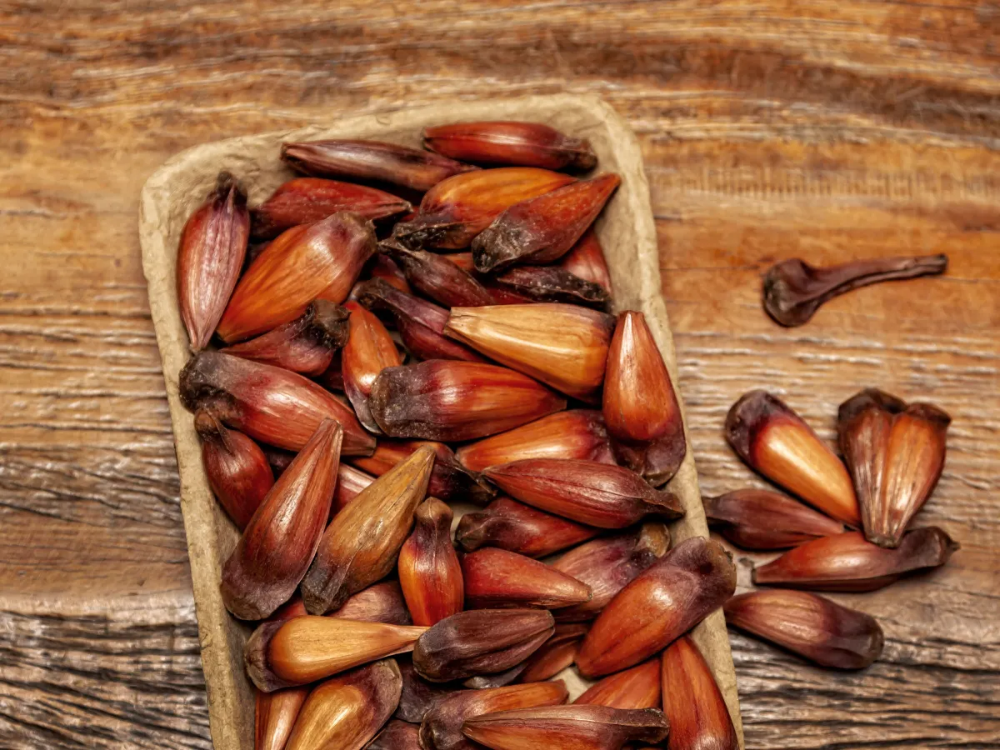

Descubra o Brasil através dos sabores que contam a história de cada região
Uma viagem gastronômica pelas tradições,
ingredientes e sabores que tornam cada
canto do
nosso país único.
Regiões brasileiras
Escolha sua região F A V O R I T A !
🇧🇷 Sabores que conquistaram o Brasil
